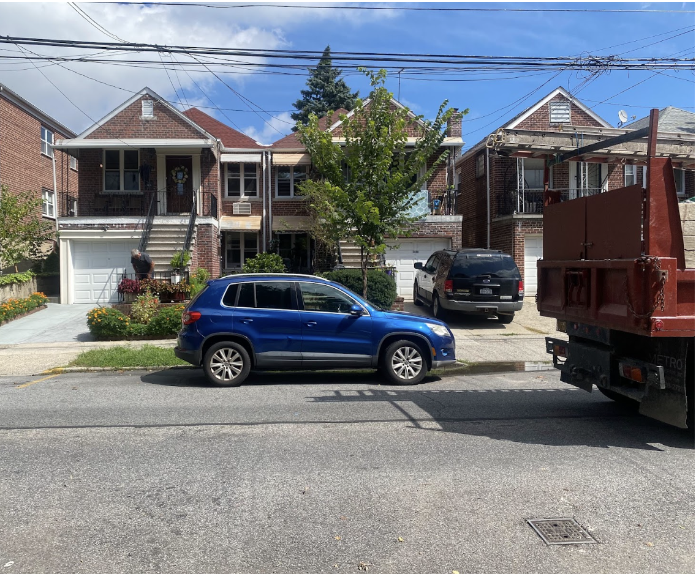

All Aboard? Upcoming Metro-North Train Service and Accompanying Development Splits Bronx Communities
By Fitzwilliam Anderson
December 6, 2023
For decades, regional trains have whizzed by the East Bronx, shuttling passengers into Manhattan, without ever stopping to pick up Bronxites along the way. That will change in 2027 when the MTA builds four new Metro-North stations in Hunts Point, Parkchester/Van Nest, Morris Park, and Co-Op City along the same line, shortening commutes and spurring development in the area.
Senate Majority Leader Chuck Schumer, D-N.Y., and Sen. Kirsten Gillibrand, D-NY., secured a $1.6 billion federal grant to help fund the construction of the stations and add two more tracks to the Hell Gate Line, the rail line that makes up part of Amtrak’s high-speed Northeast Corridor.
Proponents of the project, which broke ground last December, say the new rail access will cut commuter times to the city by 50 minutes, improve air quality in the asthma-prone area by removing 80,000 vehicle miles a day, and connect residents to higher-paying job centers in Manhattan and Westchester County. It will also right a historical wrong, said Congressman Richie Torres.
“For one hundred years, the Hell Gate Line has cut through the Bronx without actually servicing the people of the Bronx,” said the up-and-coming congressman during the press conference. “It has stood as a symbol for transit inequity.”
Janno Lieber, MTA’s Chair and CEO, said that the $3.18 billion project is a bargain. “Don’t get me wrong. I love new subway lines, but they’re costly,” said Lieber. “Here we are, think about it, saving money, using an existing right-of-way, and squeezing more mass transit for people who need it.”
Squeezing more service out of one busy rail line required putting a stop to years of bureaucratic infighting between Amtrak, which owned the Hell Gate Line, and the MTA, which wanted to use it, said Schumer.
“Thankfully I was able to bring the MTA and Amtrak together,” said Schumer. “We hashed out the details and overcame this huge hurdle that has stood in the way of making this project occur.”
Under the agreement, Amtrak will contribute $500 million toward the project and will pay fines if it delays construction by failing to stop service during agreed-upon times.
Plagued by delays caused by COVID-19 and bureaucratic infighting, the project was long in the making. “This is an infrastructure project that goes back at least four governors,” said Gov. Kathy Hochul, D-N.Y., at the same event. “People have been talking about this for over thirty years.”
While agencies bickered, Bronxites schlepped. Today, the nearly 10-mile journey from the Morris Park section of the Bronx, where one new Metro North Station will be built, to Manhattan’s Penn Station, takes about an hour.
Marielena Recine, a lifelong resident of the Bronx who commutes to midtown three days a week, takes an express bus early in the morning to avoid traffic and returns home on the No. 5 subway line during evening rush hour. She said she’s looking forward to having a faster option.
“I've been living here my entire life and I commute to Manhattan three days a week,” said Recine, who works near Grand Central. “I'm looking forward to it, to be honest.”
Not everyone is so optimistic. Phyllis Nastasio, who was born in the Bronx and moved to the Pelham Park Area after she got married, hopes the Metro-North service will be safer than the subway but is concerned that there won’t be enough parking by the future stations.
"The calm before the storm. Residents of historic communities like Morris Park are preparing for the changes the new Metro-North train stations will bring." (Photo Credit: Fitzwilliam Anderson)“We do need a new Metro North station but the whole upzoning things might be too much, too soon,” said Nastasio. “There is terrible traffic in the area.”
Years away from completion, this billion-dollar infrastructure project is already bringing in new development. Under Mayor Adams’ “Get Stuff Built” plan, the city will rezone the areas around the new Metro-North stations, adding 10,000 new jobs and 6,000 new homes.
The introduction of the up-zoning plan comes at the heels of organized opposition to new housing developments that propelled the ousting of Democrat incumbent Marjorie Velázquez by Republican Kristy Marmorato. She is the first Republican to be elected in the Bronx in nearly twenty years.
If Marmorato can’t temper Adams’ housing plan, some worry that their suburban-style neighborhoods will become unrecognizable after the stations are built.
“If I wanted to move to the concrete jungle,” said Nastasio, “I would move to Manhattan.”